Vendita lenti a contatto
La vendita di lenti a contatto può avvenire in tre modalità:
-
Senza anagrafica: tramite vendita veloce. Permette di vendere un prodotto senza raccogliere i dati del cliente. È consigliato effettuarla solo in casi eccezionali, essendo sempre preferibile creare un'anagrafica per ogni nuovo cliente
-
Con anagrafica cliente. Dal Profilo cliente, quindi con la cattura dei dati nel caso di un nuovo cliente o l'accesso ad un profilo pre-esistente:
a. Sezione AFA/Servizi (senza prescrizione)
b. Sezione Lenti a contatto (con prescrizione)
- Prima applicazione LAC e campioni
Vendita veloce senza anagrafica cliente
Questa vendita solitamente è effettuata quando il cliente non presenta particolari mix di difetti visivi (es: astigmatismo e miopia) che richiederebbero la creazione di un ordine specifico con tempi di consegna più lunghi. Questa modalità è solitamente utilizzata per i clienti che si recano in negozio e desiderano acquistare in modo rapido le lenti a contatto.
Dopo aver effettuato l'accesso al sistema, cliccare sull'icona del menù in basso a sinistra e successivamente su Vendita Rapida. In questo caso la vendita è effettuata senza creare alcuna anagrafica cliente.
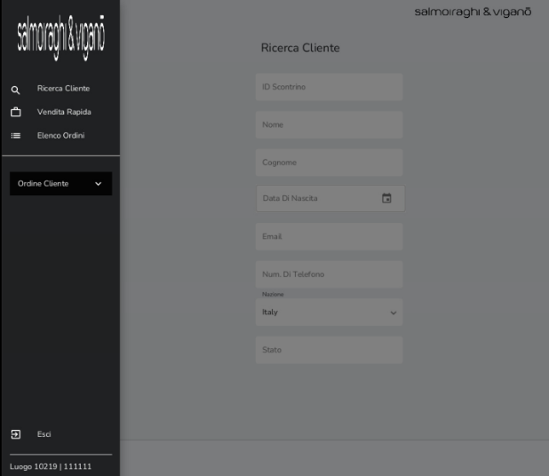
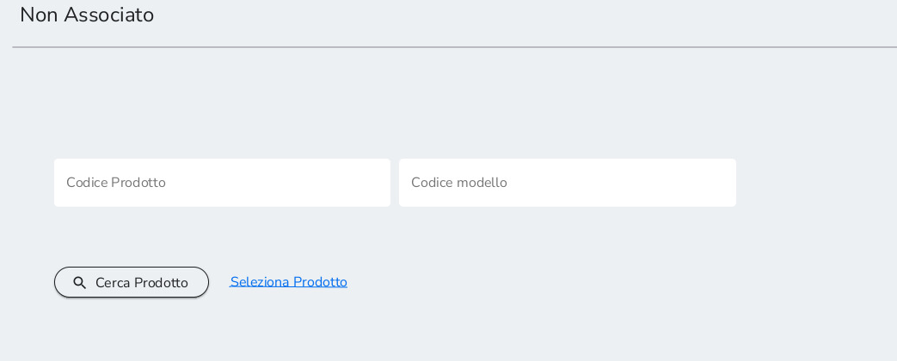
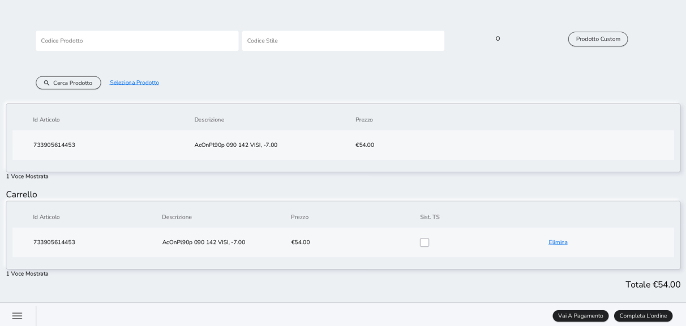
Inserire l'UPC del prodotto (manualmente o scannerizzando il barcode) e cliccare su Cerca Prodotto. Selezionare il prodotto e cliccare su Vai a Pagamento per visualizzare l'anteprima del prezzo ed aggiungere eventuali sconti.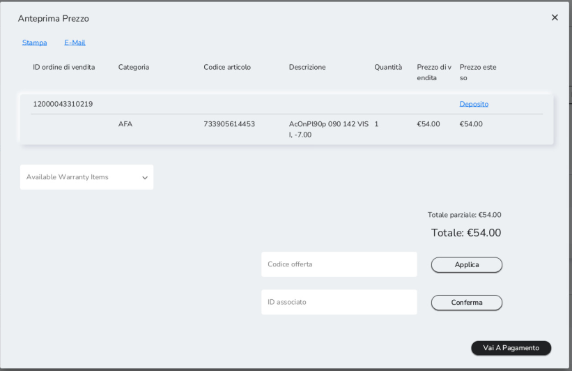
Cliccare nuovamente su Vai a Pagamento per concludere la vendita su Xstore secondo le modalità già descritte.
Se si desidera sospendere momentaneamente la vendita salvandola nella lista di ordini attivi, cliccare su Completa Ordine per aggiungere l'alias cliente come già visto nel capitolo 8.1.
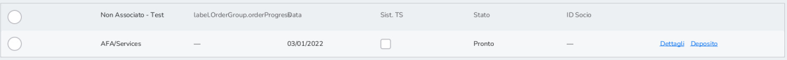
Vendita con cattura anagrafica cliente
Nel caso di vendita con cattura di dati cliente, ma senza utilizzo di una prescrizione per lenti a contatto, accedere al Profilo Cliente e cliccare su AFA/Servizi.
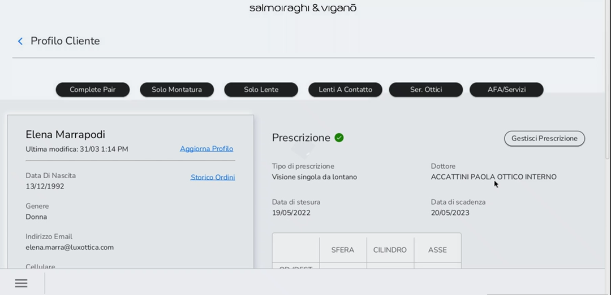
Da qui, i passaggi da seguire sono gli stessi evidenziati nel capitolo precedente. L'unica differenza è che in questo caso, salvando l'ordine nella lista di ordine attivi, la vendita non sarebbe più legata all'Alias, ma all'anagrafica del cliente.
Per vendere lenti a contatto utilizzando una prescrizione e catturando i dati cliente, saranno necessari due step:
-
Creazione della prescrizione o ricetta
-
Vendita delle lenti a contatto tramite il flusso di vendita "Lenti A Contatto".
Accedere al Profilo Cliente e aggiungere o selezionare una prescrizione per lenti a contatto cliccando su Gestisci Prescrizione.
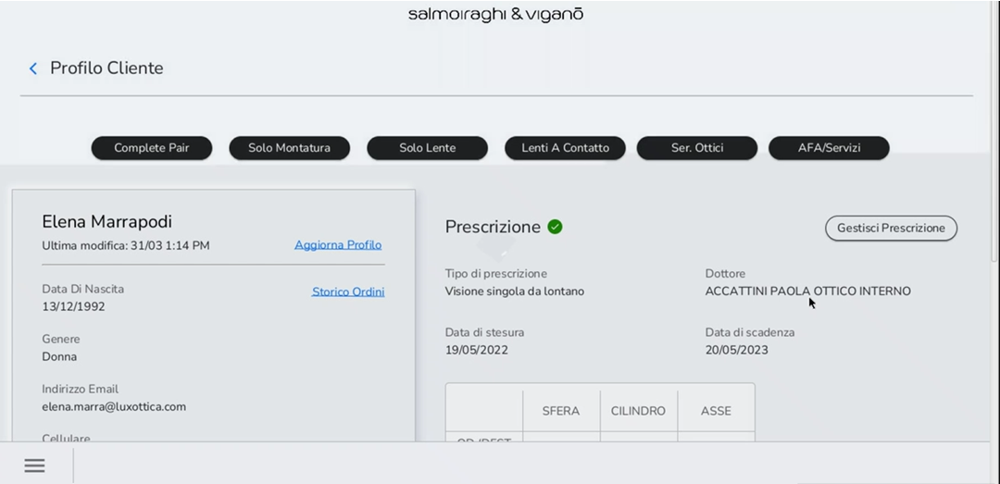
Nel caso in cui non sia già presente una prescrizione o ricetta per lenti a contatto o vi fosse necessità di crearne una più aggiornata, cliccare su Aggiungi Prescrizione.
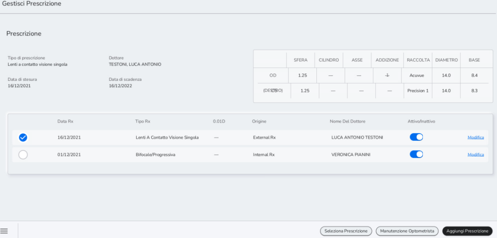
Dopo aver selezionato l'origine e il nominativo di chi ha prodotto la ricetta o prescrizione, selezionare il tipo di prescrizione (tra quelle per le lenti a contatto) dal campo Tipo di prescrizione.
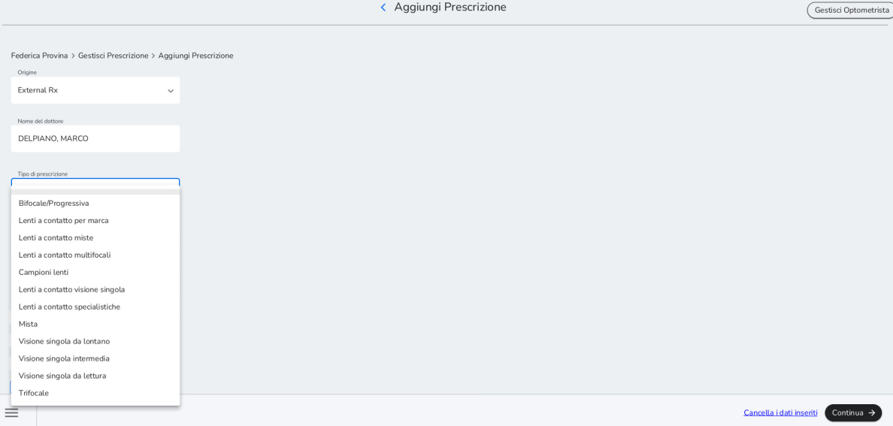
Per inserire una prescrizione per lenti a contatto generiche è necessario selezionare Lenti a contatto per Marca nel tipo di prescrizione. Successivamente è necessario inserire il campo Sfera e iniziare a digitare il nome nel campo Marca.Di seguito uno specchietto con l'indicazione del campo Marca per alcune delle lenti generiche che più si vendono.
GEOMETRIA LINEA Upc Marca
Torica FOCUS DAILIES PLUS TOR 20500000794472 FOCUS
Torica OASYS 1 DAY FOR ASTIG 20500000797688 ACUVUE 30P
Torica 1 DAY MOIST FOR 20500000797664 ACUVUE ASTIG30PZ
Torica GIORN EYE NEXT ASTIG 20500001402635 EYE NEXT
Torica ACUVUE OASYS FOR 20500000797671 ACUVUE ASTIG6PZ
Torica LE GIORNALIERE ADV 20500000828887 LE GIORNALIERE AST30P
Multifocale TOTAL 1 MULTIFOCAL 20500000828238 DAILIES TOTAL 1 MF
Torica BIOFINITY TORIC 20500000797565 BIOFINITY
Multifocale TOTAL 1 MULTIFOCAL 20500000828221 DAILIES TOTAL 1 MF
Torica LE MENSILI ADV ASTIGM 20500000828900 LE MENSILI
Inserire le specifiche mediche (Sfera, Cilindro, Asse, Curva Base, Diametro e Addizione) e indicare la marca e la gradazione. Solo per le "Lenti a contatto per marca", a cui fa riferimento la foto sotto, è necessario selezionare la gradazione del pacchetto lenti a contatto dal menù a tendina. Infatti, tutte le lenti general assortment (non codificate puntualmente) ricadono in questa categoria.
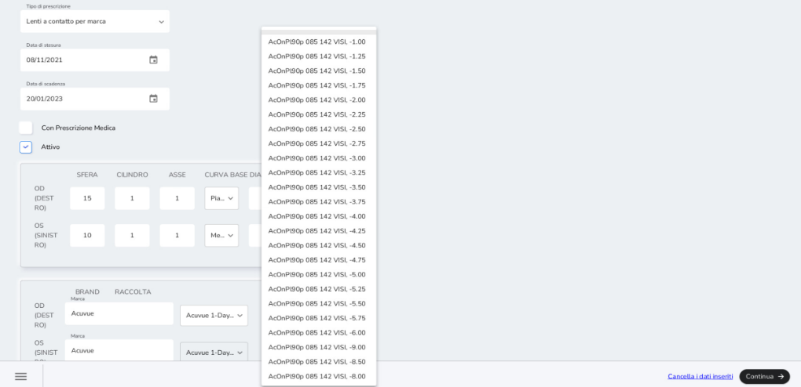
Cliccare su Continua e raccogliere i consensi privacy per i dati medici.
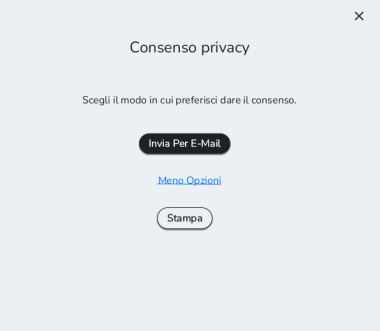
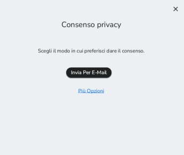
Il rilascio di questi rispecchia quanto visto nel capitolo 3.3 per i consensi marketing raccolti via e-mail o stampa.
Cliccare nuovamente su Continua per completare la registrazione della ricetta o prescrizione. Questa è visibile nello storico delle prescrizioni del cliente.
Per facilitare la comprensione della vendita delle lenti a contatto riportiamo un paio di esempi concreti.
Il primo riguarda le lenti a contatto con codice specifico a livello di potere (lenti a contatto sferiche e alcune multifocali come ad esempio le Moist)
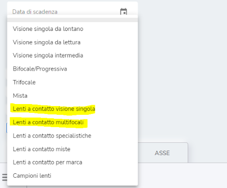
Dopo averle selezionate vi comparirà la schermata dei valori da compilare sono obbligatori per avviare la ricerca: POTERE, CURVA BASE E DIAMETRO + ADDIZIONE nei casi delle multifocali.
Una volta compilata vi comparirà una tendina con già con le lenti disponibili per questi parametri.
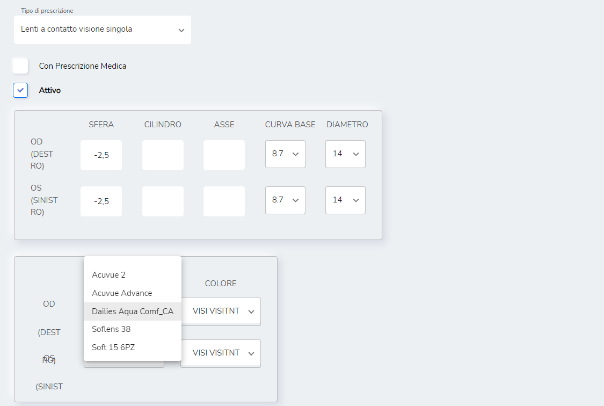
Una volta completato l\'ordine non sarà necessario ricrearlo anche su MIM, l'operazione sarà sutomatica.
Il secondo tipo di lenti che vogliamo analizzare sono le lenti a contatto con codice generico (la quasi totalità delle lenti multifocali e toriche)
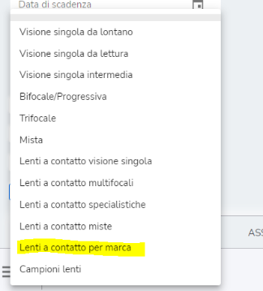
Il minimo indispensabile per avviare la ricerca è compilare la SFERA, ovviamente è possibile compilare tutti i restanti campi per affinare la ricerca. In questo caso non comparirà il menù a tendina, sarà vostro compito scrivere l\'inizio del nome della marca.
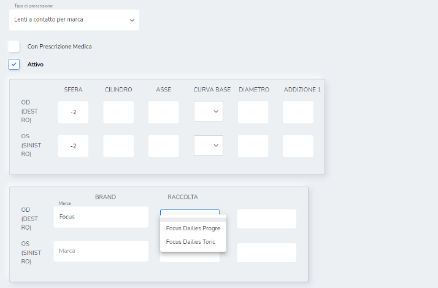
Nel caso di dubbi su cosa inserire nella voce marca, si consiglia di fare fare riferimento alla stessa dicitura di MIM nella seconda tendina di ricerca delle lenti a contatto. Importante è ricordare che in questo caso l\'ordine NON parte in automatico ma va poi creato in MIM.
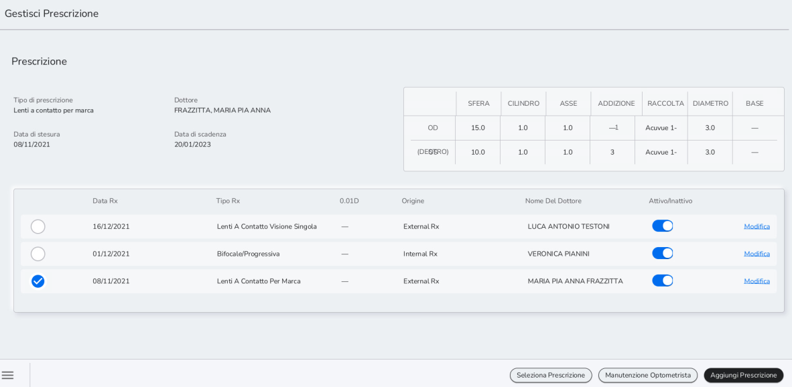
Continuando con il flusso, selezionare e cliccare Seleziona Prescrizione per renderla attiva e utilizzabile per la vendita.Dal Profilo Cliente, cliccare su Lenti a contatto.
Nella pagina Lenti a contatto selezionare la quantità di pacchetti in stock e le modalità di spedizione (Rapida o Standard) per i pacchetti non presenti in stock. Indicare dove spedire il prodotto (Indirizzo primario o secondario del cliente, oppure in negozio). Selezionando "Cliente -- Principale" per la spedizione, i dati saranno automaticamente compilati con i dati inseriti durante la fase di creazione dell'anagrafica.
Cliccare su Continua per accedere al Modulo d'Ordine o su Sospendere l'Ordine. Per tutte le lenti a contatto registrate puntualmente (non general assortment), l'ordine in Ciao! genera l'ordine in MIM per fare il calco.
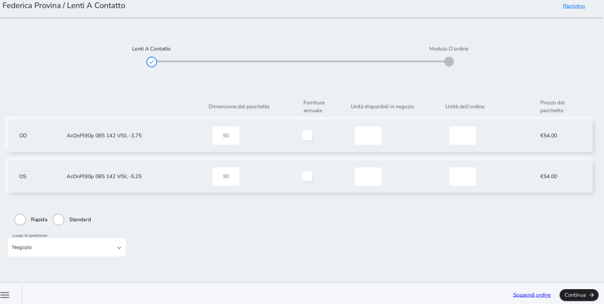
Quantità in stock va SEMPRE completata con 0
Nella pagina Modulo D'ordine è possibile inserire eventuali sconti e procedere al pagamento su Xstore. Alternativamente, è possibile stampare o inviare via e-mail il preventivo (tasti Stampa), Sospendere l'ordine, Continuare a fare acquisti o salvare l'ordine nell'archivio.
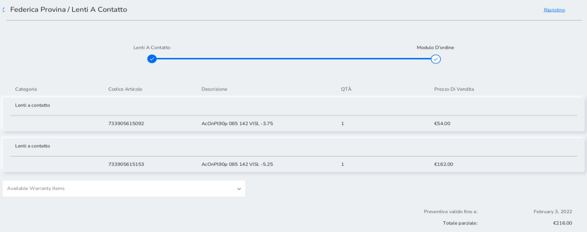
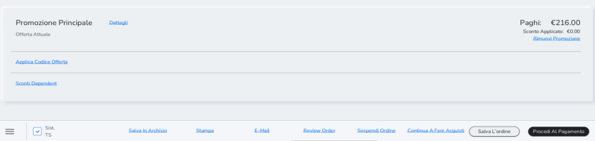
Per la consegna delle lenti a contatto si segue la procedura di consegna vista per il complete pair al capitolo 7.1.
Qualora si procedesse alla raccolta della caparra per l'acquisto lenti sia in vendita veloce (vedere capitolo 9.1) sia per la vendita con anagrafica (vedere capitolo 9.2), verrà emesso ed inviato solo lo scontrino non fiscale (documento gestionale).
Registrazione prima applicazione LAC e campioni
La scheda per la prima applicazione LAC è digitale ed è memorizzata nel sistema di cassa.
La scheda è integrata nel flusso di creazione della prescrizione. Aggiungendo una nuova prescrizione, cliccare su Campioni lenti nel campo Tipo di prescrizione.
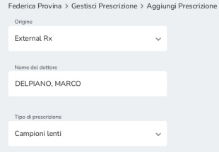
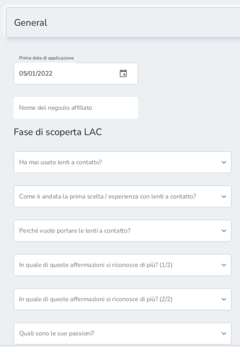
In seguito a questa selezione, nella stessa pagina si rendono disponibili tre sezioni: General, Contact Lenses Details e Feedback. Queste sezioni sono integrate nella prescrizione e utilizzate per raccogliere tutte le informazioni legate alla prima applicazione lenti a contatto del cliente.
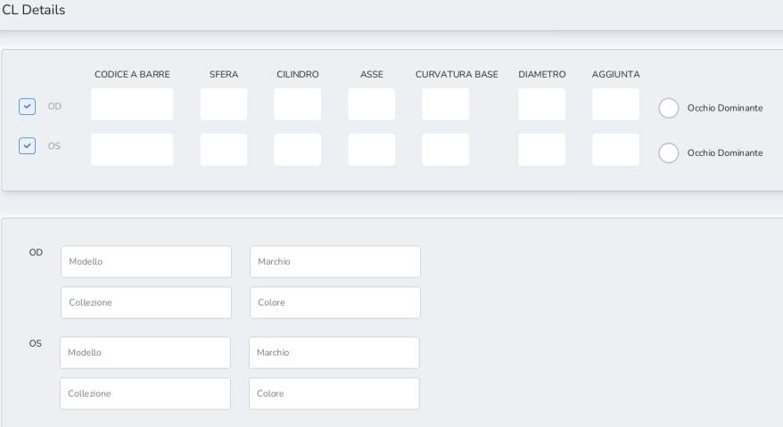
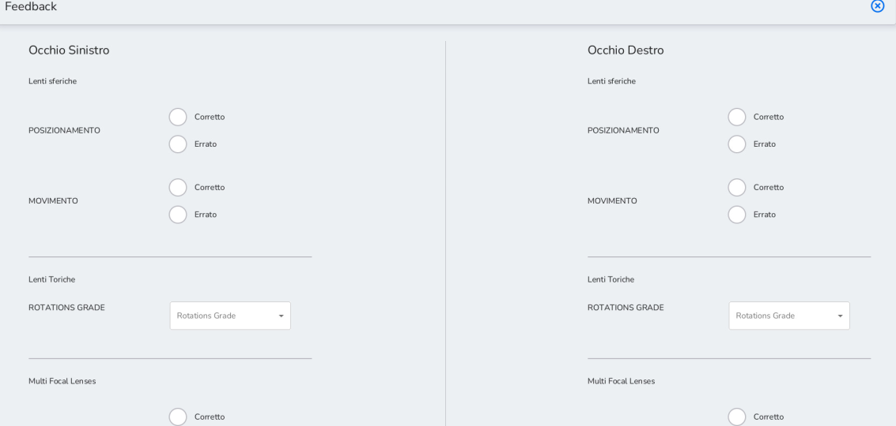
Nella sezione "Feedback" andranno inserite le informazioni a seguito della prova di prima applicazione LAC effettuata dal cliente.Cliccando su Continua, è richiesto il consenso privacy per i dati medici. È prevista la sola modalità di stampa.
Selezionare la prescrizione e cliccare sulla sezione Lenti A Contatto posto all'interno del profilo Cliente.
Procedere, inserendo le quantità desiderate e cliccare su Continua.
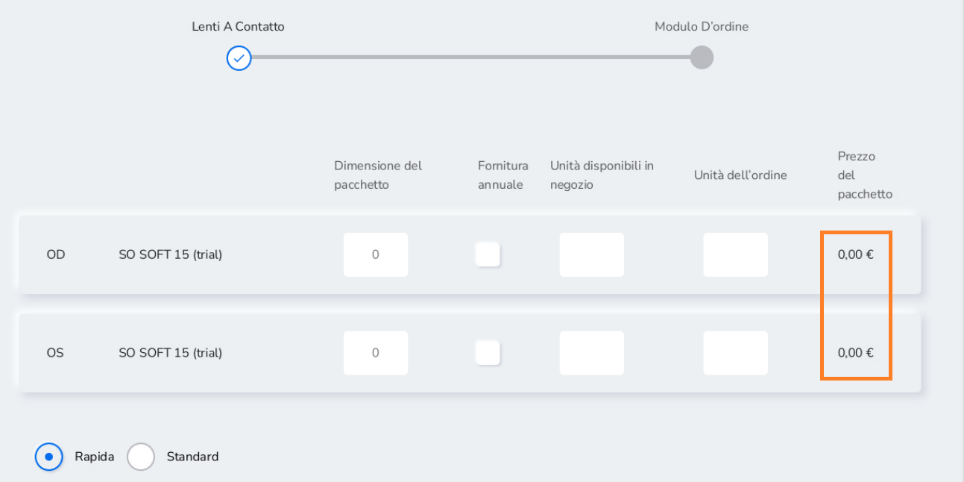
Successivamente, cliccare su Procedi Al Pagamento (con importo pari 0,00 €)
Una volta entrati su Xstore, cliccare su Transazione Completata e selezionare il metodo di ricezione (e-mail o solo stampa).
Terminato il processo di transazione, in base alla modalità di ricezione documenti, il sistema erogherà la seguente documentazione:
-
Documento gestionale (NON fiscale): da consegnare al cliente
-
Tray ticket
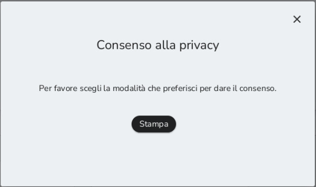